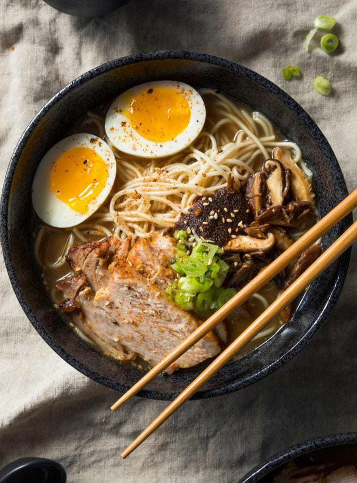

Shio Ramen
Shio Ramen adalah ramen dengan kaldu ringan yang terbuat dari tulang ayam dan babi, serta dibumbui dengan garam. Berbeda dengan ramen tonkotsu, Shio Ramen memiliki kaldu yang jernih dan segar.
Bahan-bahan:
- 80-100g mie telur segar
- 400ml Kaldu Ramen Buatan Sendiri (panas)
- 2 sdm Garam Bumbu Penyedap
- 250ml air
- 5g konbu (rumput laut kering)
- 10g kerang kering
- 50ml sake
- 25 ml mirin
- 5 ml kecap asin
- 2 potong Yakibuta (Daging Babi Rebus)
- 1 butir telur rebus dipotong menjadi dua
- Segenggam tauge, direbus
- 3 sdm biji jagung manis
- 2 sdm bawang merah cincang halus
Topping:
Langkah Pembuatan:
- Rendam konbu dan kerang dalam air semalaman.
- Panaskan air konbu dan kerang hingga mendidih.
- Tambahkan serpihan bonito dan masak 2 menit, lalu saring.
- Campurkan bahan-bahan penyedap, masak hingga garam larut.
- Rebus mie, tiriskan, dan campur dengan kaldu serta topping.